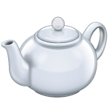

{% assign sorted_posts = site.posts | sort: "title" %}


<article>
      
            <div class="search column is-6 is-offset-3">
                <input type="text" class="input is-rounded is-medium" id="search-input" placeholder="Search..">            
                <ul style="list-style: none; margin-top:1rem;" id="results-container"></ul>
            </div>

            <hr>
    
            <ul>
                {% for p in sorted_posts %}
                    <li class="catlink">
                        <a href="{{ p.url }}">{{ p.title }}</a>
                    </li>
                {% endfor %}
            </ul>


</article>


    {% include search.html %}


    <footer class="footer">


        <a href="/teapot""></a>
    </footer>
